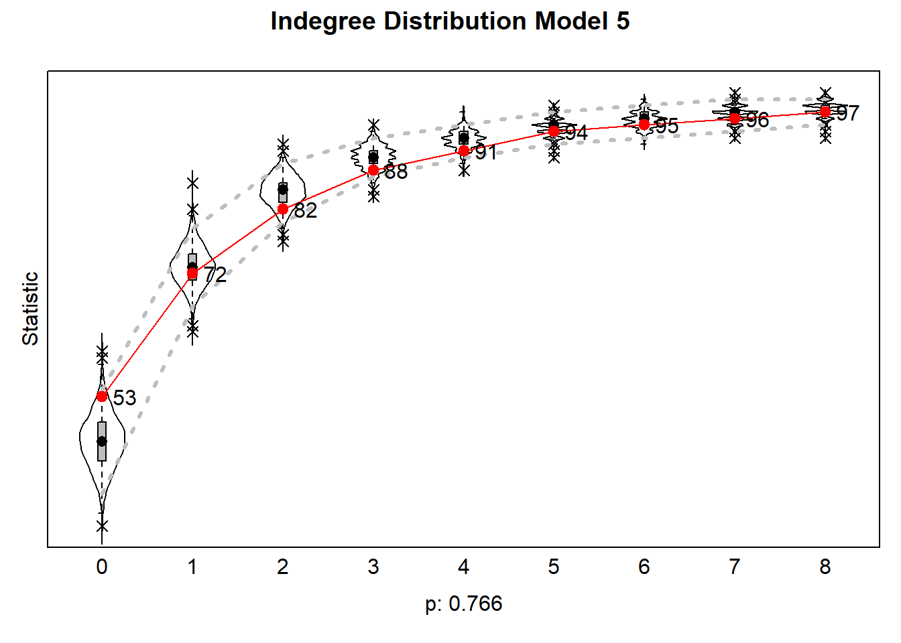

Results - Goodness of Fit
Niels Vullings
1 Load UDF
colorize <- function(x, color) {sprintf("<span style='color: %s;'>%s</span>", color, x) }
fpackage.check <- function(packages) {
lapply(packages, FUN = function(x) {
if (!require(x, character.only = TRUE)) {
install.packages(x, dependencies = TRUE)
library(x, character.only = TRUE)
}
})
}
fsave <- function(x, file = NULL, location = "./results/processed/") {
ifelse(!dir.exists("results"), dir.create("data"), FALSE)
ifelse(!dir.exists("results/processed"), dir.create("results/processed"), FALSE)
if (is.null(file))
file = deparse(substitute(x))
datename <- substr(gsub("[:-]", "", Sys.time()), 1, 8)
totalname <- paste(location, datename, file, ".rda", sep = "")
save(x, file = totalname) #need to fix if file is reloaded as input name, not as x.
}
fload <- function(filename) {
load(filename)
get(ls()[ls() != "filename"])
}
fshowdf <- function(x, ...) {
knitr::kable(x, digits = 2, "html", ...) %>%
kableExtra::kable_styling(bootstrap_options = c("striped", "hover")) %>%
kableExtra::scroll_box(width = "100%", height = "300px")
}
#---- Extract Simulated Networks ----
getNet <- function(N, edgeList) { # get simulated network from SIENA
# N = number of nodes
# edgeList = edgelist that is returned by siena07(...)$sims
simNet <- matrix(0,N,N)
for (i in 1:nrow(edgeList)) {
simNet[edgeList[i,1],edgeList[i,2]] <- 1
}
return(simNet)
}1.1 Custom Dyad & Triad census function
#---- Dyad census ----
ts_dyads_evo <- function (sims, net1, simtype = "notypespecified", forplot = TRUE) {
if (is.list(sims) == TRUE) {
nsims <- length(sims)
}
else {
nsims <- 1
}
df <- foreach::foreach(1:nsims, i = iterators::icount(),
.combine = "rbind") %dopar% {
if (is.list(sims) == TRUE) {
net2 <- sims[[i]]
}
else {
net2 <- sims
}
diag(net1) <- NA
diag(net2) <- NA
flips <- net1 + t(net2) - net2
jumpst1 <- net1 + t(net1)
stablet1 <- jumpst1
jumpst1[lower.tri(jumpst1)] <- NA
jumpst2 <- net2 + t(net2)
stablet2 <- jumpst2
jumpst2[lower.tri(jumpst2)] <- NA
stable00 <- as.data.frame(which(jumpst1 == 0 & jumpst2 ==
0, arr.ind = TRUE))
stable01 <- as.data.frame(which(flips == 0 & stablet1 ==
1 & stablet2 == 1, arr.ind = TRUE))
stable11 <- as.data.frame(which(jumpst1 == 2 & jumpst2 ==
2, arr.ind = TRUE))
Null_Assym <- as.data.frame(which(jumpst1 == 0 & stablet2 ==
1, arr.ind = TRUE))
Assym_Null <- as.data.frame(which(flips == 0 & stablet1 ==
1 & stablet2 == 0, arr.ind = TRUE))
Assym_Mut <- as.data.frame(which(stablet1 == 1 & jumpst2 ==
2, arr.ind = TRUE))
Mut_Assym <- as.data.frame(which(jumpst1 == 2 & jumpst2 ==
1, arr.ind = TRUE))
flip <- as.data.frame(which(flips == 2 & stablet1 !=
2 & stablet2 != 2, arr.ind = TRUE))
jump02 <- as.data.frame(which(jumpst1 == 0 & jumpst2 ==
2, arr.ind = TRUE))
jump20 <- as.data.frame(which(jumpst1 == 2 & jumpst2 ==
0, arr.ind = TRUE))
table <- cbind(nrow(stable00), nrow(stable01), nrow(stable11),
nrow(Null_Assym), nrow(Assym_Null), nrow(Assym_Mut),
nrow(Mut_Assym), nrow(flip), nrow(jump02), nrow(jump20))
colnames(table) <- c("Null > Null", "Assym > Assym", "Mutual > Mutual",
"Null > Assym", "Assym > Null", "Assym > Mutual", "Mutual > Assym",
"Tie flip", "Null > Mutual", "Mutual > Null")
simnet <- NULL
return(data.frame(simnet = i, table))
}
df <- as.data.frame(df)
type <- NULL
df$type <- simtype
if (forplot == TRUE) {
df <- tidyr::pivot_longer(df, cols = !c(simnet, type),
names_to = "x", values_to = "y")
}
return(df)
}
#---- Triad census ----
ts_triads_evo <- function (sims, net1, simtype = "notypespecified", forplot = TRUE) {
x <- j <- k <- a1 <- a2 <- a3 <- tie_change <- Freq <- simnet <- type <- NULL
if (is.list(sims) == TRUE) {
nsims <- length(sims)
}
else {
nsims <- 1
}
df <- foreach::foreach(1:nsims, x = iterators::icount(),.combine = "rbind") %dopar% {
if (is.list(sims) == TRUE) {
net2 <- sims[[x]]
#find which values in the matrix are missing
N_NA <- unique(which(is.na(net1) | is.na(net2), arr.ind = TRUE)[,1]) # Identify normal NA values
S_NA <- as.data.frame(table(which(net1 == 10 | net2 == 10, arr.ind = TRUE)[,1])) # Identify Structural NAs
S_NA <- which(S_NA$Freq == nrow(net1))
NA_rows <- c(as.vector(N_NA), as.vector(S_NA)) # save all actors in 1 vector
if(length(NA_rows)> 0){
warning(ncol(net1)- length(NA_rows)," actors will be analysed due to missing values. Following ", length(NA_rows), " actors have been listwise deleted: ",paste(NA_rows, collapse=","))
# Delete both rows and columns of actors that are missing (NA)
net1 <- net1[-NA_rows,-NA_rows]
net2 <- net2[-NA_rows,-NA_rows]
}
}
else {
net2 <- sims
#find which values in the matrix are missing
NA_row <- unique(which(is.na(net1) | is.na(net2), arr.ind = TRUE)[,1])
#find which values in the matrix are missing
N_NA <- unique(which(is.na(net1) | is.na(net2), arr.ind = TRUE)[,1]) # Identify normal NA values
S_NA <- as.data.frame(table(which(net1 == 10 | net2 == 10, arr.ind = TRUE)[,1])) # Identify Structural NAs
S_NA <- which(S_NA$Freq == nrow(net1))
NA_rows <- c(as.vector(N_NA), as.vector(S_NA)) # save all actors in 1 vector
if(length(NA_rows)> 0){
warning(ncol(net1)- length(NA_rows)," actors will be analysed due to missing values. Following ", length(NA_rows), " actors have been listwise deleted: ",paste(NA_rows, collapse=","))
# Delete both rows and columns of actors that are missing (NA)
net1 <- net1[-NA_rows,-NA_rows]
net2 <- net2[-NA_rows,-NA_rows]
}
}
triads <- c("X003", "X012", "X102", "X021D", "X021U",
"X021C", "X111D", "X111U", "X030T", "X030C", "X201",
"X120D", "X120U", "X120C", "X210", "X300")
df <- foreach::foreach(a1 = 1:nrow(net1), i = iterators::icount(),.combine = "rbind") %:%
foreach::foreach(a2 = 1:nrow(net1), j = iterators::icount(), .combine = "rbind") %:%
foreach::foreach(a3 = 1:nrow(net1), k = iterators::icount(),.combine = "rbind") %do% {
if (i > j & j > k) {
data.frame(i = i, j = j, k = k,
t1_ij = as.character(net1[a1,a2]), t1_ji = as.character(net1[a2, a1]),
t1_ik = as.character(net1[a1,a3]), t1_ki = as.character(net1[a3, a1]),
t1_jk = as.character(net1[a2,a3]), t1_kj = as.character(net1[a3, a2]),
typeT1 = triads[which(sna::triad.census(net1[c(a1,a2, a3), c(a1, a2, a3)]) == 1)],
t2_ij = as.character(net2[a1, a2]), t2_ji = as.character(net2[a2, a1]),
t2_ik = as.character(net2[a1, a3]), t2_ki = as.character(net2[a3, a1]),
t2_jk = as.character(net2[a2, a3]), t2_kj = as.character(net2[a3, a2]),
typeT2 = triads[which(sna::triad.census(net2[c(a1, a2, a3), c(a1, a2, a3)]) == 1)],
tie_change = sum(c(net1[a1, a2], net1[a2, a1], net1[a1, a3], net1[a3, a1], net1[a2, a3], net1[a3, a2]) != c(net2[a1, a2], net2[a2, a1], net2[a1, a3], net2[a3, a1], net2[a2, a3], net2[a3, a2])))
}
}
df$name <- paste0(df$i, ".", df$j, ".", df$k)
df <- subset(df, select = c(tie_change))
#---- !!NEW!! Assign levels to counter missing columns ----
df$tie_change <- as.factor(df$tie_change)
levels(df$tie_change) <- c("0", "1","2", "3","4", "5","6")
#---- Fixes issues with simulated networks ----
df <- data.frame(simnet = x, table(df))
df <- tidyr::pivot_wider(df, names_from = tie_change,
values_from = Freq)
}
df <- as.data.frame(df)
df$type <- simtype
if (forplot == TRUE) {
df <- tidyr::pivot_longer(df, cols = !c(simnet, type),
names_to = "x", values_to = "y")
}
return(df)
}2 Load Packages
3 Set up parallel cluster
no_cores <- detectCores() - 1
mycl <- makeCluster(rep("localhost", no_cores))
clusterEvalQ(mycl, library(RsienaTwoStep))
registerDoParallel(mycl)
# stopCluster(mycl)4 Load Data
5 Load Models
ans_M0 <- fload("./results/processed/20241024-ans_M0.rda")
ans_M1 <- fload("./results/processed/20241024-ans_M1_2.rda")
ans_M2 <- fload("./results/processed/20241024-ans_M2_2.rda")
ans_M2.5 <- fload("./results/processed/20241024-ans_M2.5.rda")
ans_M3 <- fload("./results/processed/20241029-ans_M3.rda")
ans_M4 <- fload("./results/processed/20241024-ans_M4.rda")
ans_M5 <- fload("./results/processed/20241029-ans_M5.rda")6 RSiena - Goodness of Fit
Apart from the convergence of the model and the significance of the estimates, the Goodness of Fit plays a critical role in assessing whether a model estimated in RSiena is representative of the observed data. As RSiena is a method that uses simulation, it is important to check whether the structure of the simulated networks resembles the changes visible in the observed network (Ripley et al. 2011). While many auxiliary functions are available to test the Goodness of fit of a model, I chose to use two types: the distribution of indegrees and a dyad evolution census. The indegree distribution is available in RSiena and measures the extent to which the simulated networks follow the indegree distribution of the observed network. The dyad evolution census is function that is written by myself, as part of the RsienaTwoStep-project (Tolsma 2024). Using the R package ggplot2, it is create a Goodness of Fit plot for this census. The grey violinplot is the distribution of the simulated networks for a specific triad transition from wave 1 to wave 2. The red point including the tails is the mean of the simulated network census including the confidence intervals (\(\mu \pm 1.96* \sigma\)). The green point is the observed value for a specific transition. Logically, the closer the red and green points are to each other, the better this transition was estimated in the simulations. When the green point is within the tails, it is significant for a alpha of 0.05. Below I will assess the Goodness of Fit of each model and its consequences for the results.
6.1 Model 0
The Goodness of Fit for the indegree distribution is 0, indicating
very a significant deviation between the expected and observed indegree
distribution. The amount of actors with 0 or 1 observed indegrees is
(severly) underestimated. The amount of actors with 2 indegrees is quite
accurately estimated. Actors with 3 or more indegrees are all
overestimated. Given the fact that this model does not include any
structural effects apart from the standard network statistics in RSiena,
this makes sense.
Regarding the dyad census, most observed transitions are within 1.96
the standard deviation of the simulated networks. However, the
transition Null > Assym and Assym > Null are
in the lower bounds of the distribution, which indicates that there is
room for improvement. The observed transitions for stable mutual
dyadsMutual > Mutual is overestimated, while the
transition Mutual > Assym and Tie flips are
both underestimated in this model.
simNets <- list()
for (i in 1:1000) {
simNets[[i]] = getNet(100, ans_M0$sims[[i]][["Data1"]][["net"]][["1"]])
}GOF_M0 <- sienaGOF(ans_M0, IndegreeDistribution, verbose = FALSE, join = TRUE, varName = "net")
plot(GOF_M0, main = "Indegree Distribution Model 0")
GOF_dyads <- ts_dyads_evo(simNets, wave_1) %>% filter(x != "Null...Null") %>% group_by(simnet) %>% mutate(stand = y/sum(y))
OBS_dyads <- ts_dyads_evo(wave_2, wave_1) %>% filter(x != "Null...Null") %>% mutate(stand = y/sum(y)) %>% select(x,y,stand)
GOF_plot_M0 <- GOF_dyads %>% left_join(OBS_dyads, by = "x")p_M0 <- ggplot(GOF_plot_M0, aes(x=x, y=y.x) ) +
geom_violin(fill = "grey", position=position_dodge(.8)) +
stat_summary(fun = mean,
geom = "errorbar",
fun.max = function(x) mean(x) + sd(x),
fun.min = function(x) mean(x) - sd(x),
width=.1,
color="red", position=position_dodge(.8)) +
stat_summary(fun = mean,
geom = "point",
color="red", position=position_dodge(.8)) +
stat_summary( aes(x=x, y=y.y), fun = mean,
geom = "point",
color="green", size = 3, shape=10, position=position_dodge(.8)) +
labs(x = "Dyad Census", y = "N") +
# scale_x_discrete(guide = guide_axis(n.dodge = 2)) +
theme(axis.text.x = element_text(angle = 45, vjust = 0.5,)) +
theme_minimal()
p_M0
6.2 Model 1
Model 1, which includes the structural effects, has a Goodness of Fit - value for the indegree distribution of 0.016. The inclusion of the IsolateNet statistic decreased the overestimation of the isolates, but the amount of actors with 0 indegrees is still underestimated. The amount of actors with 1 indegrees is similarly underestimated, while actors with 2 or more indegrees is overestimated. The GOF of the dyad census is similar to the GOF of Model 0, indicating the not much changed between these models, which is also visible by the small increase in the p-value of the indegree distribution plot.
simNets <- list()
for (i in 1:1000) {
simNets[[i]] = getNet(100, ans_M1$sims[[i]][["Data1"]][["net"]][["1"]])
}GOF_M1 <- sienaGOF(ans_M1, IndegreeDistribution, verbose = FALSE, join = TRUE, varName = "net")
plot(GOF_M1, main = "Indegree Distribution Model 1")GOF_dyads <- ts_dyads_evo(simNets, wave_1) %>% filter(x != "Null...Null") %>% group_by(simnet) %>% mutate(stand = y/sum(y))
OBS_dyads <- ts_dyads_evo(wave_2, wave_1) %>% filter(x != "Null...Null") %>% mutate(stand = y/sum(y)) %>% select(x,y,stand)
GOF_plot_M1 <- GOF_dyads %>% left_join(OBS_dyads, by = "x")p_M1 <- ggplot(GOF_plot_M1, aes(x=x, y=y.x) ) +
geom_violin(fill = "grey", position=position_dodge(.8)) +
stat_summary(fun = mean,
geom = "errorbar",
fun.max = function(x) mean(x) + sd(x),
fun.min = function(x) mean(x) - sd(x),
width=.1,
color="red", position=position_dodge(.8)) +
stat_summary(fun = mean,
geom = "point",
color="red", position=position_dodge(.8)) +
stat_summary( aes(x=x, y=y.y, group = 1), fun = mean,
geom = "point",
color="green", size = 3, shape=10, position=position_dodge(.8)) +
labs(x = "Dyad Census", y = "N") +
# scale_x_discrete(guide = guide_axis(n.dodge = 2)) +
theme(axis.text.x = element_text(angle = 60, vjust = 0.5)) +
theme_minimal()
p_M16.3 Model 2
Model 2 shows some increase in the p-value of the indegree distribution (p = 0.184), indicating that the GOF is improving. This is mainly visible for actors with 2 or more indegrees, who are not as overestimated as in the previous models. The GOF for the dyad census is similar to the other models in terms of the differences between the observed and expected transitions. However, the violin plots are getting smaller, indicating there there is less variability between the simulations.
simNets <- list()
for (i in 1:1000) {
simNets[[i]] = getNet(100, ans_M2$sims[[i]][["Data1"]][["net"]][["1"]])
}GOF_M2 <- sienaGOF(ans_M2, IndegreeDistribution, verbose = FALSE, join = TRUE, varName = "net")
plot(GOF_M2, main = "Indegree Distribution Model 2")GOF_dyads <- ts_dyads_evo(simNets, wave_1) %>% filter(x != "Null...Null") %>% group_by(simnet) %>% mutate(stand = y/sum(y))
OBS_dyads <- ts_dyads_evo(wave_2, wave_1) %>% filter(x != "Null...Null") %>% mutate(stand = y/sum(y)) %>% select(x,y,stand)
GOF_plot_M2 <- GOF_dyads %>% left_join(OBS_dyads, by = "x")p_M2 <- ggplot(GOF_plot_M2, aes(x=x, y=y.x) ) +
geom_violin(fill = "grey", position=position_dodge(.8)) +
stat_summary(fun = mean,
geom = "errorbar",
fun.max = function(x) mean(x) + sd(x),
fun.min = function(x) mean(x) - sd(x),
width=.1,
color="red", position=position_dodge(.8)) +
stat_summary(fun = mean,
geom = "point",
color="red", position=position_dodge(.8)) +
stat_summary( aes(x=x, y=y.y), fun = mean,
geom = "point",
color="green", size = 3, shape=10, position=position_dodge(.8)) +
labs(x = "Dyad Census", y = "N") +
# scale_x_discrete(guide = guide_axis(n.dodge = 2)) +
theme(axis.text.x = element_text(angle = 45, vjust = 0.5,)) +
theme_minimal()
p_M26.4 Model 2.5
As stated in the result section, Model 2.5 has a significant increase
in the GOF, due to the indegree popularity squared parameter, which is
known to have a better fit than the normal version (Ripley et al. 2011). This model has a p-value
of 0.891 for the indegree distribution, with all actors with 1 or more
indegrees being estimated correctly (or at least within Q1-Q3). The only
exception are the isolates, which are still underestimated. However, it
should be noted that the difference between the observed and expected
isolates is much lower than the previous models.
Model 2.5 is less accurate with regard to the GOF of the dyad census.
Apart from the transition Assym > Assym and Mutual
> Null, all observed dyadic transitions are not within 1
standard deviation of the simulated transitions. The model is
particularly bad at estimating the transition from Assym >
Null and Null > Assym, which are both overestimated
compared to the observed transistions.
simNets <- list()
for (i in 1:1000) {
simNets[[i]] = getNet(100, ans_M2.5$sims[[i]][["Data1"]][["net"]][["1"]])
}GOF_M2.5 <- sienaGOF(ans_M2.5, IndegreeDistribution, verbose = FALSE, join = TRUE, varName = "net")
plot(GOF_M2.5, main = "Indegree Distribution Model 2.5")GOF_dyads <- ts_dyads_evo(simNets, wave_1) %>% filter(x != "Null...Null") %>% group_by(simnet) %>% mutate(stand = y/sum(y))
OBS_dyads <- ts_dyads_evo(wave_2, wave_1) %>% filter(x != "Null...Null") %>% mutate(stand = y/sum(y)) %>% select(x,y,stand)
GOF_plot_M2.5 <- GOF_dyads %>% left_join(OBS_dyads, by = "x")p_M2.5 <- ggplot(GOF_plot_M2.5, aes(x=x, y=y.x) ) +
geom_violin(fill = "grey", position=position_dodge(.8)) +
stat_summary(fun = mean,
geom = "errorbar",
fun.max = function(x) mean(x) + sd(x),
fun.min = function(x) mean(x) - sd(x),
width=.1,
color="red", position=position_dodge(.8)) +
stat_summary(fun = mean,
geom = "point",
color="red", position=position_dodge(.8)) +
stat_summary( aes(x=x, y=y.y), fun = mean,
geom = "point",
color="green", size = 3, shape=10, position=position_dodge(.8)) +
labs(x = "Dyad Census", y = "N") +
# scale_x_discrete(guide = guide_axis(n.dodge = 2)) +
theme(axis.text.x = element_text(angle = 45, vjust = 0.5,)) +
theme_minimal()
p_M2.56.5 Model 3
simNets <- list()
for (i in 1:1000) {
simNets[[i]] = getNet(100, ans_M3$sims[[i]][["Data1"]][["net"]][["1"]])
}GOF_M3 <- sienaGOF(ans_M3, IndegreeDistribution, verbose = FALSE, join = TRUE, varName = "net")
plot(GOF_M3, main = "Indegree Distribution Model 3")GOF_dyads <- ts_dyads_evo(simNets, wave_1) %>% filter(x != "Null...Null") %>% group_by(simnet) %>% mutate(stand = y/sum(y))
OBS_dyads <- ts_dyads_evo(wave_2, wave_1) %>% filter(x != "Null...Null") %>% mutate(stand = y/sum(y)) %>% select(x,y,stand)
GOF_plot_M3 <- GOF_dyads %>% left_join(OBS_dyads, by = "x")p_M3 <- ggplot(GOF_plot_M3, aes(x=x, y=y.x) ) +
geom_violin(fill = "grey", position=position_dodge(.8)) +
stat_summary(fun = mean,
geom = "errorbar",
fun.max = function(x) mean(x) + sd(x),
fun.min = function(x) mean(x) - sd(x),
width=.1,
color="red", position=position_dodge(.8)) +
stat_summary(fun = mean,
geom = "point",
color="red", position=position_dodge(.8)) +
stat_summary( aes(x=x, y=y.y), fun = mean,
geom = "point",
color="green", size = 3, shape=10, position=position_dodge(.8)) +
labs(x = "Dyad Census", y = "N") +
# scale_x_discrete(guide = guide_axis(n.dodge = 2)) +
theme(axis.text.x = element_text(angle = 45, vjust = 0.5,)) +
theme_minimal()
p_M36.6 Model 4
simNets <- list()
for (i in 1:1000) {
simNets[[i]] = getNet(100, ans_M4$sims[[i]][["Data1"]][["net"]][["1"]])
}GOF_M4 <- sienaGOF(ans_M4, IndegreeDistribution, verbose = FALSE, join = TRUE, varName = "net")
plot(GOF_M4, main = "Indegree Distribution Model 4")
GOF_dyads <- ts_dyads_evo(simNets, wave_1) %>% filter(x != "Null...Null") %>% group_by(simnet) %>% mutate(stand = y/sum(y))
OBS_dyads <- ts_dyads_evo(wave_2, wave_1) %>% filter(x != "Null...Null") %>% mutate(stand = y/sum(y)) %>% select(x,y,stand)
GOF_plot_M4 <- GOF_dyads %>% left_join(OBS_dyads, by = "x")p_M4 <- ggplot(GOF_plot_M4, aes(x=x, y=y.x) ) +
geom_violin(fill = "grey", position=position_dodge(.8)) +
stat_summary(fun = mean,
geom = "errorbar",
fun.max = function(x) mean(x) + sd(x),
fun.min = function(x) mean(x) - sd(x),
width=.1,
color="red", position=position_dodge(.8)) +
stat_summary(fun = mean,
geom = "point",
color="red", position=position_dodge(.8)) +
stat_summary( aes(x=x, y=y.y), fun = mean,
geom = "point",
color="green", size = 3, shape=10, position=position_dodge(.8)) +
labs(x = "Dyad Census", y = "N") +
# scale_x_discrete(guide = guide_axis(n.dodge = 2)) +
theme(axis.text.x = element_text(angle = 45, vjust = 0.5,)) +
theme_minimal()
p_M46.7 Model 5
simNets <- list()
for (i in 1:1000) {
simNets[[i]] = getNet(100, ans_M5$sims[[i]][["Data1"]][["net"]][["1"]])
}GOF_M5 <- sienaGOF(ans_M5, IndegreeDistribution, verbose = FALSE, join = TRUE, varName = "net")
plot(GOF_M5, main = "Indegree Distribution Model 5")GOF_dyads <- ts_dyads_evo(simNets, wave_1) %>% filter(x != "Null...Null") %>% group_by(simnet) %>% mutate(stand = y/sum(y))
OBS_dyads <- ts_dyads_evo(wave_2, wave_1) %>% filter(x != "Null...Null") %>% mutate(stand = y/sum(y)) %>% select(x,y,stand)
GOF_plot_M5 <- GOF_dyads %>% left_join(OBS_dyads, by = "x")p_M5 <- ggplot(GOF_plot_M5, aes(x=x, y=y.x) ) +
geom_violin(fill = "grey", position=position_dodge(.8)) +
stat_summary(fun = mean,
geom = "errorbar",
fun.max = function(x) mean(x) + sd(x),
fun.min = function(x) mean(x) - sd(x),
width=.1,
color="red", position=position_dodge(.8)) +
stat_summary(fun = mean,
geom = "point",
color="red", position=position_dodge(.8)) +
stat_summary( aes(x=x, y=y.y), fun = mean,
geom = "point",
color="green", size = 3, shape=10, position=position_dodge(.8)) +
labs(x = "Dyad Census", y = "N") +
# scale_x_discrete(guide = guide_axis(n.dodge = 2)) +
theme(axis.text.x = element_text(angle = 45, vjust = 0.5,)) +
theme_minimal()
p_M5
# TEST
# p_M1 <- ggplot(GOF_plot, aes(x=x, y=y.x) ) +
# geom_violin(fill = "grey", position=position_dodge(.8)) +
# stat_summary(fun = mean,
# geom = "errorbar",
# fun.max = function(x) mean(x) + sd(x),
# fun.min = function(x) mean(x) - sd(x),
# width=.1,
# color="red", position=position_dodge(.8)) +
# stat_summary( aes(x=x, y=y.x, group = 1), fun = mean,
# geom = "line",
# color="red", position=position_dodge(.8)) +
# stat_summary( aes(x=x, y=y.y, group = 1), fun = mean,
# geom = "line",
# color="green", shape=10, position=position_dodge(.8)) +
# labs(x = "Dyad Census", y = "N") +
# # scale_x_discrete(guide = guide_axis(n.dodge = 2)) +
# theme(axis.text.x = element_text(angle = 60, vjust = 0.5)) +
# theme_minimal()
#
# p_M1